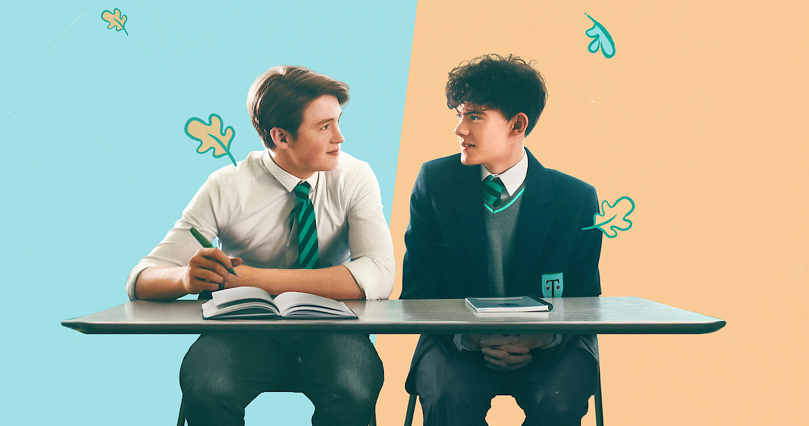
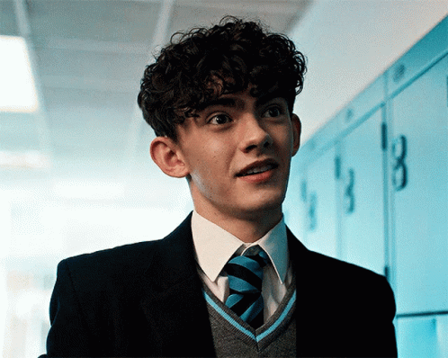

HI LOVELLIES ♡
today we'll be doing a lil mini series review. Today's choice is the British Netflix original, ♡
HeartStopper ♡
Spoiler alert: the gays win

Thy plot..
Based on a webcomic and graphic novel by Alice Oseman, "Heartstopper" follows two high school boys in England. Until falling for Charlie Spring (Joe Locke), Nick Nelson (Kit Connor) had only been attracted to girls.
Let's meet the crew
♡ Charlie Spring ♡
lil bio..
gay asf, white, 5'11, high-strung individual who overthinks everything. sensitive and has a habit of apologizing frequently, which Nick notices right away. Charlie has a habit of hiding his emotions to keep others happy. When Nick breaks down in front of him, Charlie breaks down in tears because "watching [Nick] weep makes [him] cry." He is known as a "gay nerd" by most people, including himself, who enjoys reading, dogs, and playing the drums..